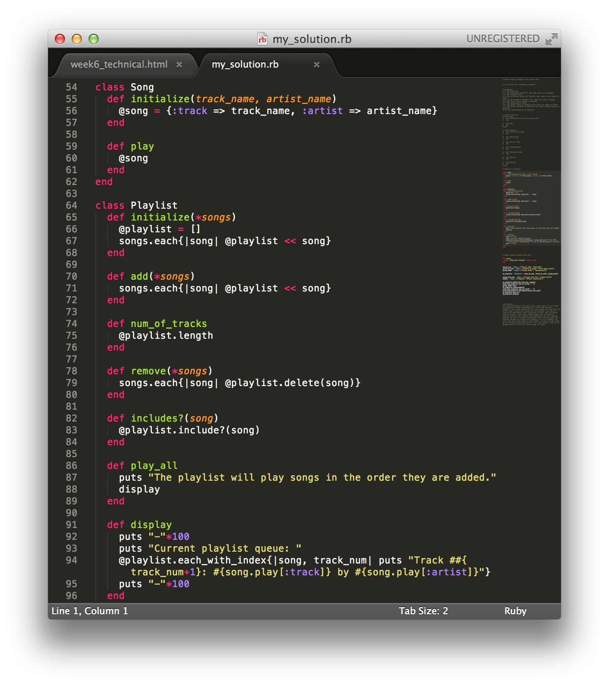

This week, we've learned a lot about Object Oriented Programming in Ruby. Often considered the opposite of Object Oriented Programming is Functional Programming. So what makes these two so different?
Object Oriented Programming
At the core of object oriented programming is the concept of objects with their own unique attributes and procedures. In object oriented programming, one creates many objects that can 'talk' to and interact with one another. For instance, in one of our challenges this week we were asked to create a Playlist and a Song class. Using our Song class as a 'template', we were able to create many different instances, or unique versions, of Song objects. In addition, we were able to have our Song and Playlist classes 'talk' to one another through their unique functions, known as methods.
 Functional Programming
Whereas objects are at the core of object oriented programming, functions (somewhat unsurprisingly) are at the core of functional programming. Functional programming focuses on functions that provide results based on inputs. Additionally, functional programming, unlike object oriented programming, avoids state. This means in object oriented programming you are often changing the contents of memory locations at any given point in the program's execution. In functional programming, however, one does not specify changes to the state directly.
Takeaways
While I'm certainly no expert on the subect, it appears that the biggest pro of object oriented programming is its straightforward concept, and the biggest pro of functional programming is its efficiency. Hope this helps!